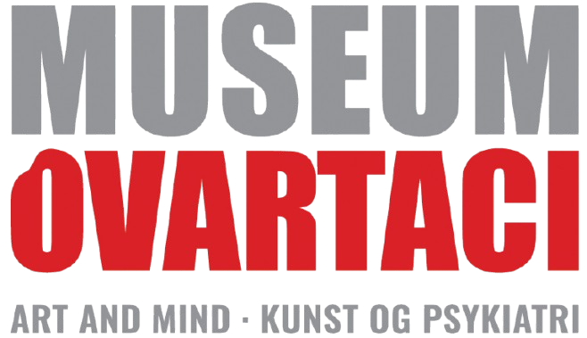
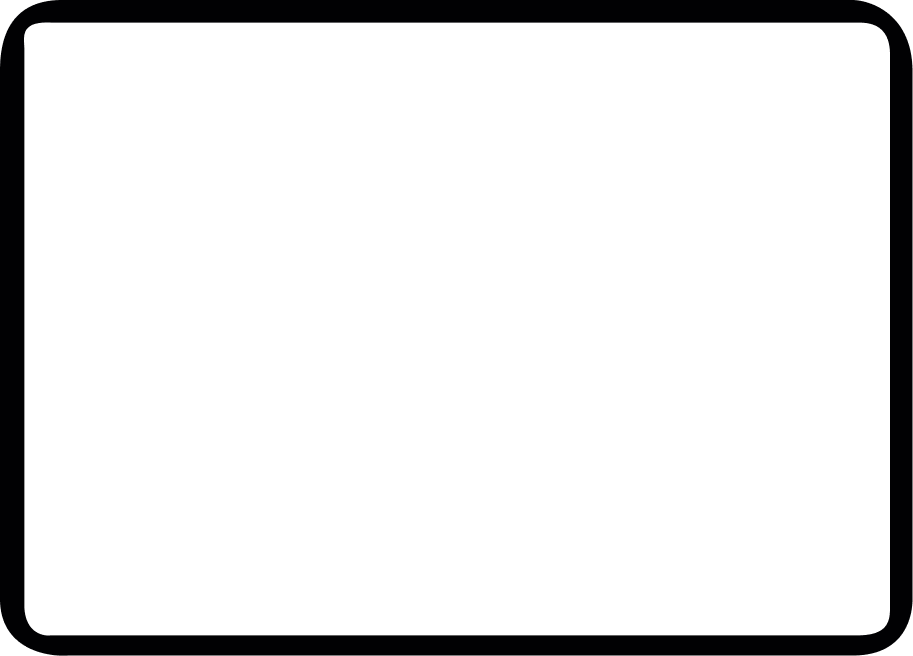
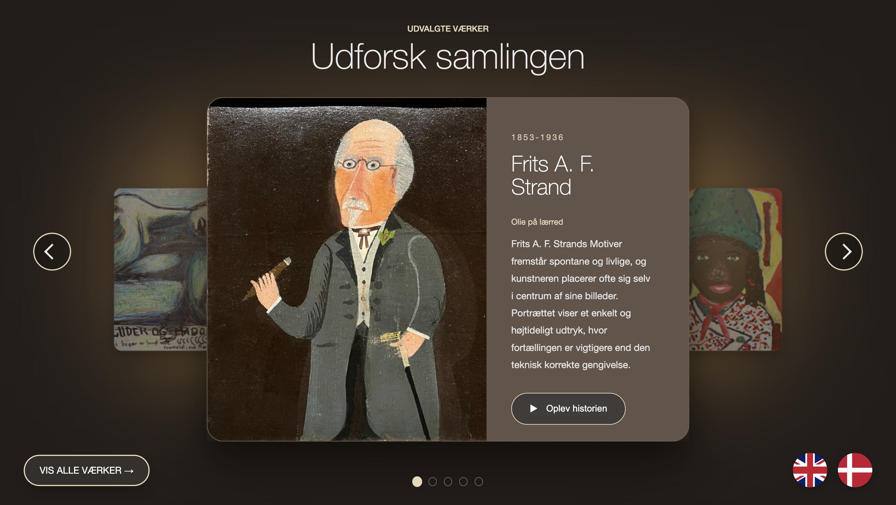
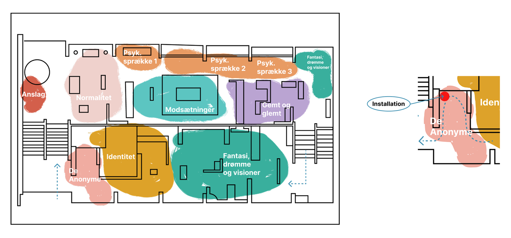
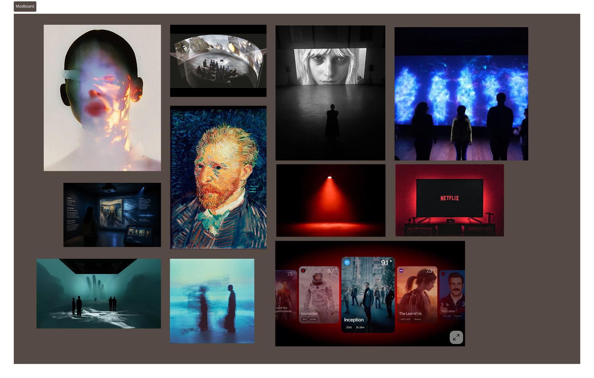
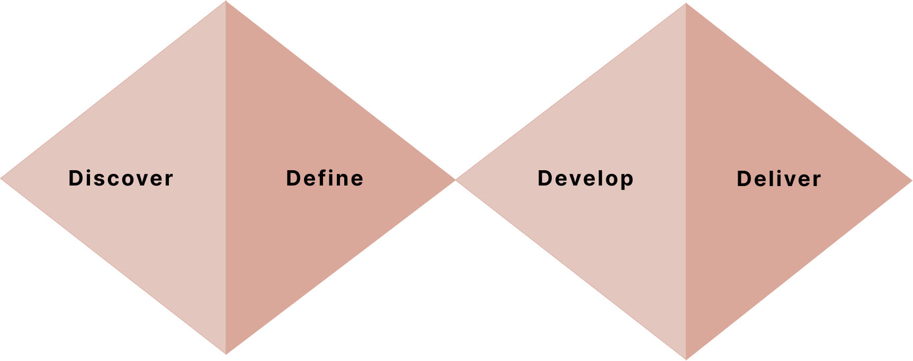
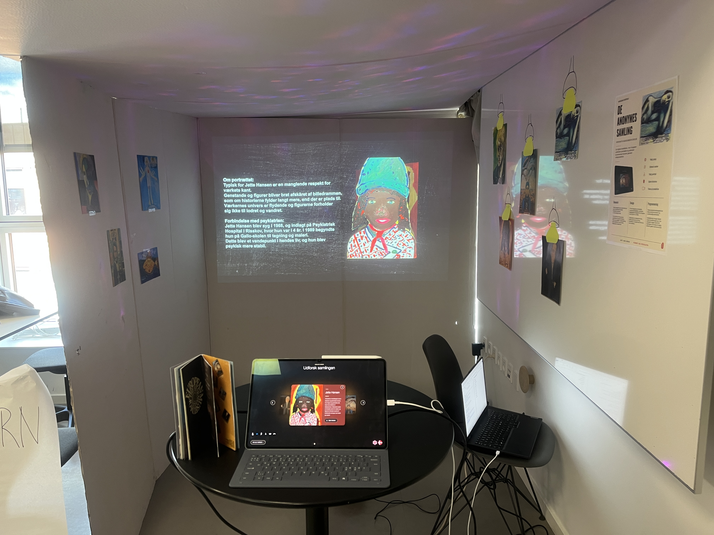
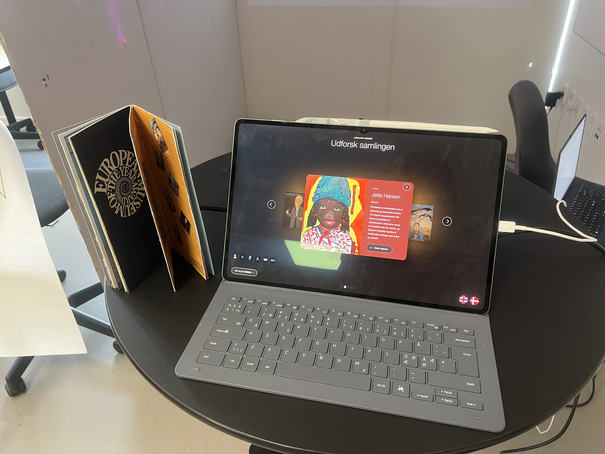
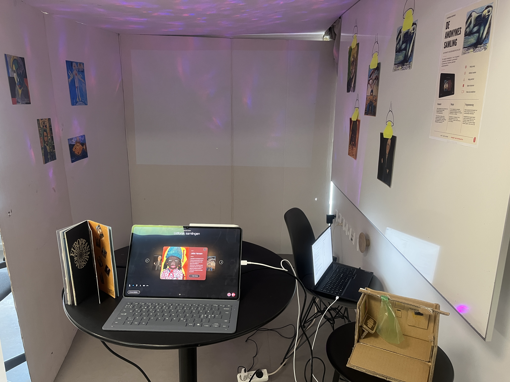

Interaktiv, Sanselig & Storytelling

Projektet er udviklet for Museum Ovartaci med fokus på museets mindre kendte kunstnere. Målet var at skabe en interaktiv fortælling, hvor brugeren inviteres med på en mental rejse gennem kunstnernes univers og historier. Gennem interaktion, visuelle virkemidler og storytelling bliver kunstnernes værker og personligheder mere nærværende og interessante for museets besøgende.
Projektet består af flere elementer som: touchskærm, projektor, lys og højttalere. Alle elementerne gør det muligt at komme i kunstnernes egene verdener, som de har udtrykt gennem kunst


Vi havde fokus på, hvordan en kompleks historie kunne formidles på en måde, der føltes engagerende, intuitiv og personlig. Vi arbejdede blandt andet med brugerens oplevelse før, under og efter mødet med installationen samt med tilgængelighed og forskellige måder at interagere med indholdet på.
En vigtig overvejelse var at skabe en balance mellem information og oplevelse, så brugeren ikke blot skulle læse om kunstnerne, men aktivt føle sig som en del af fortællingen. Og samtidig overvejelser ift. det fysiske rum.
Vi arbejdede ud fra Double Diamond-modellen, hvor processen var opdelt i Discover, Define, Develop og Deliver. Vi startede med research, inspiration og analyse af målgruppen og arbejdede derefter med blandt andet experience maps, worldbuilding, brainstorms, Brainwriting, Crazy 8, SCAMPER og idéudvikling.
Herefter udviklede vi moodboards, style tiles, sketches, storyboards, wireframes og user flows. Idéerne blev løbende evalueret og videreudviklet med fokus på brugeroplevelse, storytelling og tilgængelighed.

Figma blev brugt til wireframes, user flows, prototyper og udvikling af det visuelle interface. Derudover arbejdede vi med Adobe-programmer til bearbejdning og udvikling af grafiske elementer. Vi brugte også forskellige metoder og modeller som Double Diamond, ORCA-modellen, experience mapping og heuristisk evaluering til at strukturere designprocessen.



